促销效果评估 · 品类结构拆解 · 季节性规律 · 统计检验验证
分析工具： SQL (SQLite) 多维聚合查询 · SciPy 统计显著性检验 · Seaborn + Matplotlib 可视化（共 13 张图表）
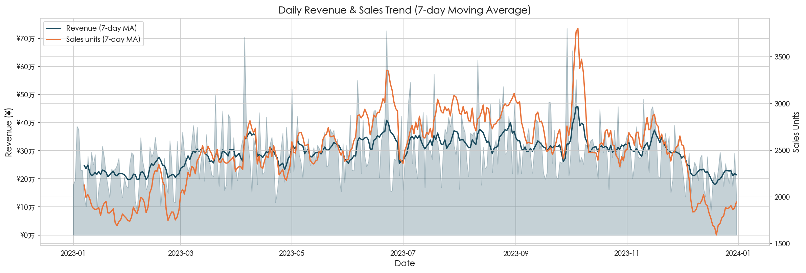
图 1：每日总营收（浅色面积）与 7 日滑动平均（深色曲线）—— 左轴营收，右轴销量
| 月份 | 营收（万元） | 总销量（件） | 日均销量/件 | 均价（¥） |
|---|---|---|---|---|
| 1月 | 682 | 58,186 | 75.1 | 117.4 |
| 2月 | 644 | 55,623 | 79.5 | 113.7 |
| 3月 | 899 | 74,726 | 96.4 | 118.2 |
| 4月 | 881 | 72,573 | 96.8 | 120.1 |
| 5月 | 935 | 79,323 | 102.4 | 119.4 |
| 6月 | 1,007 | 86,351 | 115.1 | 115.5 |
| 7月 | 1,040 | 87,127 | 112.4 | 118.1 |
| 8月 | 1,066 | 91,095 | 117.5 | 115.8 |
| 9月 | 941 | 79,031 | 105.4 | 118.4 |
| 10月 | 1,021 | 84,599 | 109.2 | 122.6 |
| 11月 | 940 | 80,092 | 106.8 | 118.3 |
| 12月 | 662 | 56,804 | 73.3 | 116.4 |
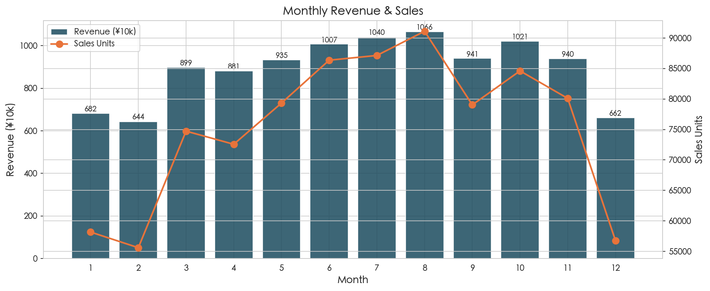
图 2：月度营收（柱状，左轴）与销量（折线，右轴）
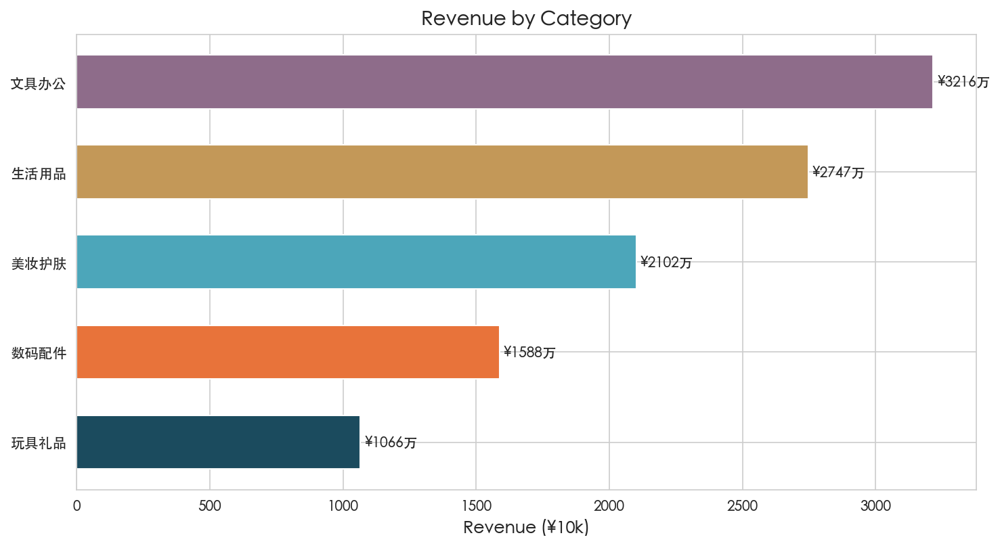
图 3：五大品类营收对比
| 品类 | 营收（万元） | 营收占比 | 总销量（件） | 平均售价（¥） | 平均周转率 |
|---|---|---|---|---|---|
| 文具办公 | 3,216 | 30.0% | 274,945 | 117.0 | 64.0% |
| 生活用品 | 2,747 | 25.6% | 224,269 | 122.5 | 62.0% |
| 美妆护肤 | 2,102 | 19.6% | 180,746 | 116.3 | 58.8% |
| 数码配件 | 1,588 | 14.8% | 135,270 | 117.4 | 52.4% |
| 玩具礼品 | 1,066 | 9.9% | 90,300 | 118.0 | 41.2% |
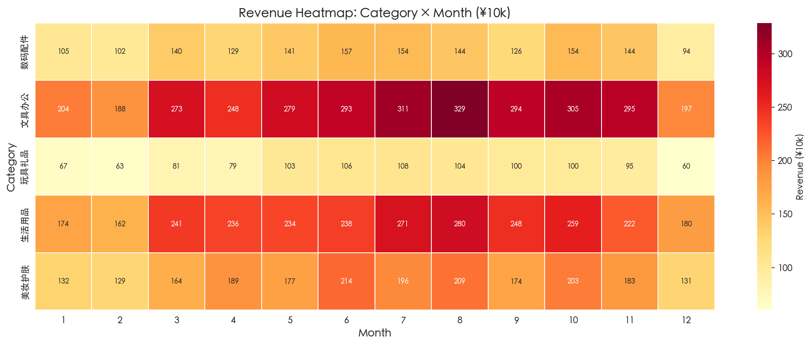
图 4：品类 × 月份营收热力图（颜色越深 = 营收越高，单位 ¥万）
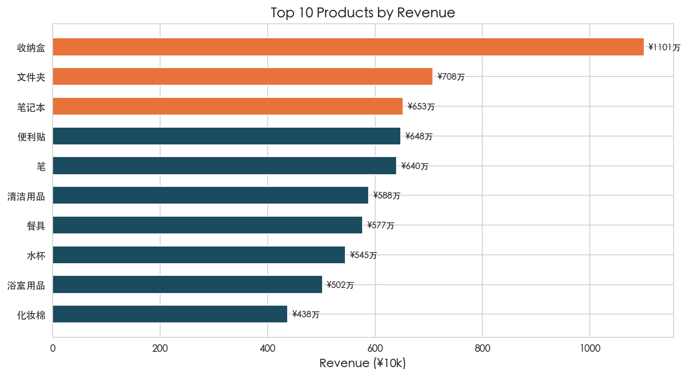
图 5：营收 Top 10 产品
| 排名 | 产品 | 营收（万元） | 销量（件） | 均价（¥） | 所属品类 |
|---|---|---|---|---|---|
| 1 | 收纳盒 | 1,101 | 96,100 | 114.6 | 生活用品 |
| 2 | 文件夹 | 708 | 56,700 | 124.8 | 文具办公 |
| 3 | 笔记本 | 653 | 54,305 | 120.2 | 文具办公 |
| 4 | 便利贴 | 648 | 56,465 | 114.8 | 文具办公 |
| 5 | 笔 | 640 | 55,622 | 115.1 | 文具办公 |
| 6 | 清洁用品 | 588 | 47,087 | 124.9 | 生活用品 |
| 7 | 餐具 | 577 | 44,018 | 131.1 | 生活用品 |
| 8 | 水杯 | 545 | 45,668 | 119.3 | 生活用品 |
| 9 | 浴室用品 | 502 | 43,249 | 116.1 | 生活用品 |
| 10 | 化妆棉 | 438 | 36,278 | 120.7 | 美妆护肤 |
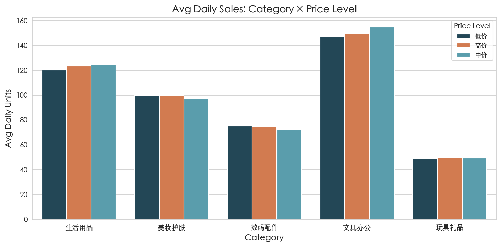
图 6：各品类在不同价格档位下的平均日销量
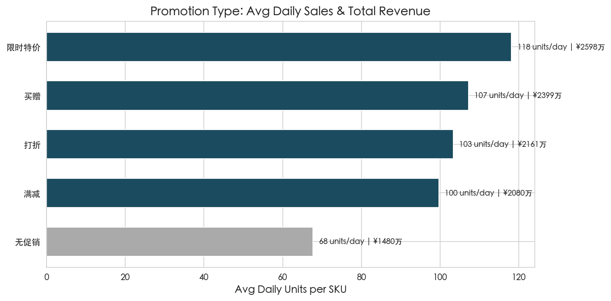
图 7：四种促销方式与无促销的日均销量对比
| 促销类型 | 数据条数 | 日均销量/件 | 相比无促销提升 | 总营收（万元） | 营收占比 |
|---|---|---|---|---|---|
| 无促销（基准） | 1,837 | 67.7 | — | 1,480 | 13.8% |
| 限时特价 | 1,833 | 118.1 | +74.4% | 2,598 | 24.2% |
| 买赠 | 1,877 | 107.2 | +58.3% | 2,399 | 22.4% |
| 打折 | 1,813 | 103.3 | +52.6% | 2,161 | 20.2% |
| 满减 | 1,765 | 99.7 | +47.2% | 2,080 | 19.4% |
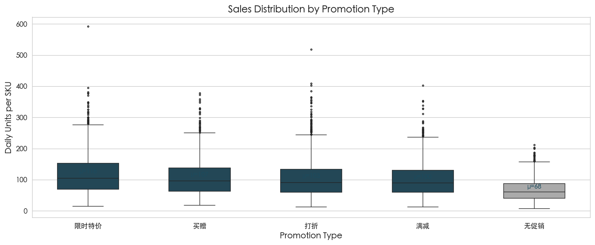
图 8：各促销类型的销量分布箱线图（μ = 均值，箱体 = 四分位距 IQR）
| 价格档位 | 最佳促销 | 日均销量 | 次佳促销 | 日均销量 |
|---|---|---|---|---|
| 低价 | 限时特价 | 112.5 | 买赠 | 107.3 |
| 中价 | 限时特价 | 120.1 | 买赠 | 107.9 |
| 高价 | 限时特价 | 121.7 | 买赠 | 106.4 |
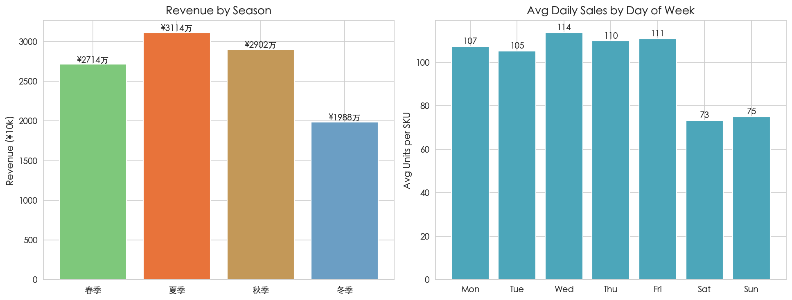
图 9：左 — 各季节营收；右 — 星期分布日均销量
| 季节 | 营收（万元） | 占比 |
|---|---|---|
| 春季 | 2,714 | 25.3% |
| 夏季 | 3,114 | 29.1% |
| 秋季 | 2,902 | 27.1% |
| 冬季 | 1,988 | 18.5% |
| 时段 | 日均销量 |
|---|---|
| 工作日（周一~周五） | 109.4 |
| 周末（周六、周日） | 74.1 |
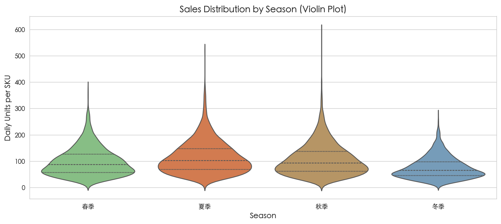
图 10：各季节销量分布的小提琴图（宽度 = 该销量区间的出现频次）
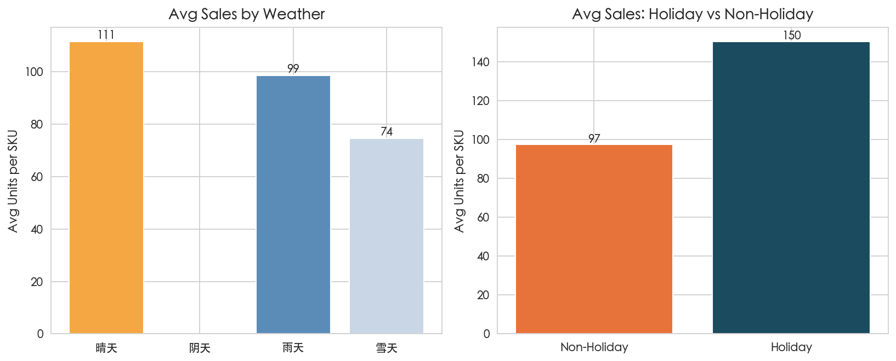
图 11：左 — 天气对日均销量的影响；右 — 节假日 vs 非节假日
| 天气 | 日均销量 | 数据条数 |
|---|---|---|
| 多云 | 112.7 | 2,475 |
| 晴天 | 111.5 | 2,150 |
| 雨天 | 98.6 | 2,150 |
| 雪天 | 74.5 | 2,350 |
| 类型 | 日均销量 | 数据条数 |
|---|---|---|
| 节假日 | 150.3 | 325 (3.6%) |
| 非节假日 | 97.4 | 8,800 (96.4%) |
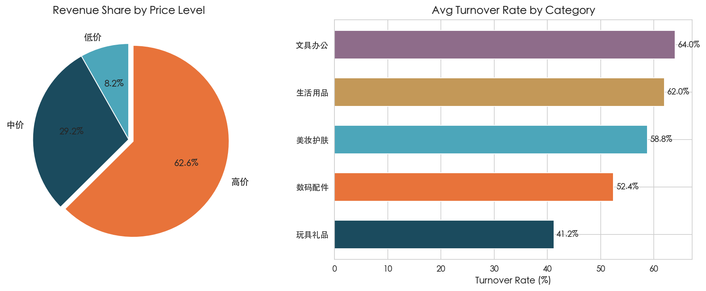
图 12：左 — 价格档位营收占比（饼图）；右 — 各品类平均周转率
| 档位 | 营收（万元） | 占比 |
|---|---|---|
| 低价 | 880 | 8.2% |
| 中价 | 3,133 | 29.2% |
| 高价 | 6,704 | 62.6% |
| 品类 | 周转率 |
|---|---|
| 文具办公 | 64.0% |
| 生活用品 | 62.0% |
| 美妆护肤 | 58.8% |
| 数码配件 | 52.4% |
| 玩具礼品 | 41.2% |
以下检验全部使用 SciPy 库完成。p 值 < 0.001 表示差异在统计学上"极显著"——即该差异由随机波动导致的概率不足千分之一。
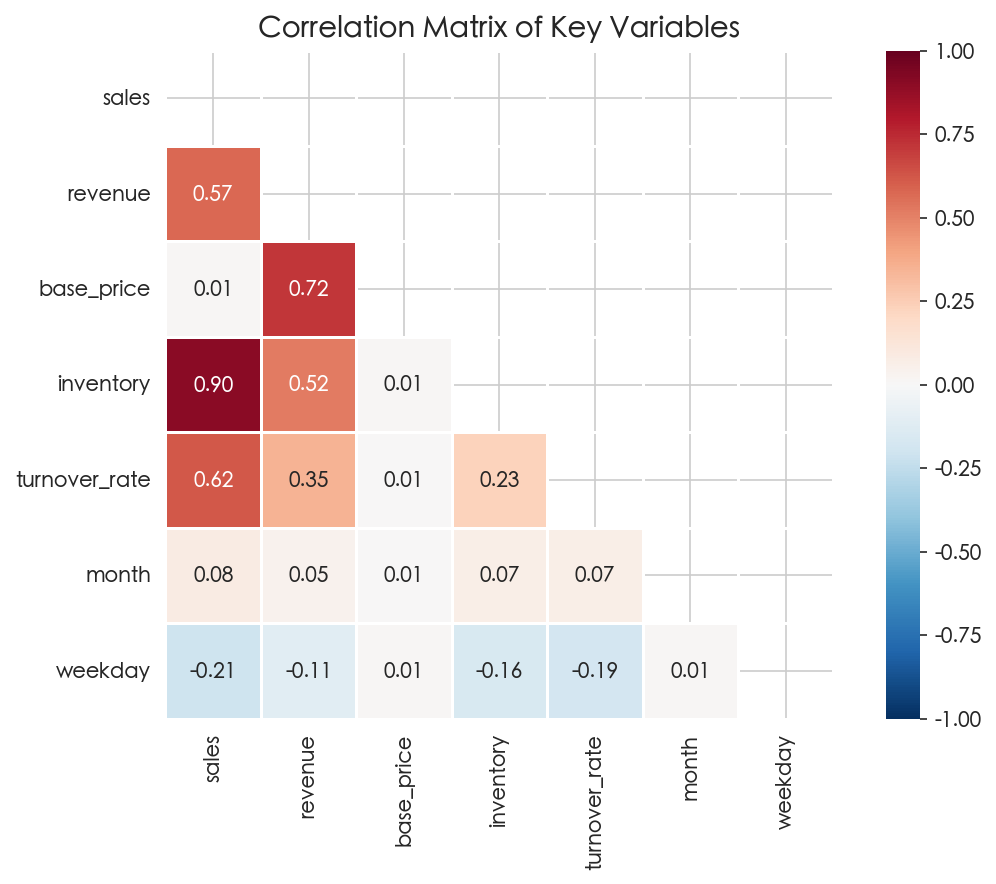
图 13：关键变量的 Pearson 相关系数矩阵
结论：促销对销量的提升是真实存在的，不是随机波动。两组均值差异高达 39.5 件/天，t 值 37.22 远大于常规阈值 1.96。
| 品类 | 日均销量均值 | 标准差 | 解读 |
|---|---|---|---|
| 文具办公 | 150.7 | 64.5 | 绝对领先，波动也大 |
| 生活用品 | 122.9 | 50.6 | 稳定第二 |
| 美妆护肤 | 99.0 | 40.7 | 中游，波动最小 |
| 数码配件 | 74.1 | 30.0 | 偏低，波动最小 |
| 玩具礼品 | 49.5 | 20.4 | 销量最低，波动也最小 |
F 值高达 1486，说明品类间的销量差异远超品类内部的随机波动。这意味着品类选择是决定销量的核心因素。
| 促销类型 | 日均销量均值 | 标准差 |
|---|---|---|
| 限时特价 | 118.1 | 62.8 |
| 买赠 | 107.2 | 56.8 |
| 打折 | 103.3 | 58.1 |
| 满减 | 99.7 | 52.9 |
四种促销方式之间的差异虽然不如品类间差异那么大（F=34.58 vs 1486），但仍然是统计极显著的。限时特价确实系统性地优于满减。
天气间的销量差异在统计上是显著的。但 ANOVA 只能告诉你"至少有一组不同"，不能排除季节、节假日等混杂因素的干扰。建议将天气视为参考信号而非独立因果变量。
这是全部检验中唯一不显著的结果——而且这正是最有价值的信息。价格和销量之间几乎没有任何线性关系（r ≈ 0.01），p = 0.327 意味着我们无法拒绝"相关系数为零"的原假设。这意味着在 MINISO 的价格带内（约 ¥10-300），涨价不会明显抑制需求，降价也不会明显刺激需求。这为"促销可持续"提供了经济学基础：限时特价的 +74.4% 提升可能更多来自行为心理学效应（限时=稀缺=冲动购买），而非单纯的价格弹性。
节假日效应极显著。但需注意节假日样本仅 325 条（3.6%），且节假日与促销高度重叠。建议将"节假日+促销"视为一个组合策略而非两个独立变量。
将促销预算和排期优先分配给限时特价，减少满减类活动的占比。限时特价在全品类、全价格档位都是最优解，不存在需要"看情况"选择的场景。
文具办公保持最优货架位和高库存水位；玩具礼品压缩常备 SKU，在节假日前 2 周集中铺货；数码配件维持少量高价款作为利润补充。
5月中下旬开始加大备货（迎接 6-8 月高峰），8 月是全年储备的最高峰；1-2 月适当压缩库存和人力，2 月春节可作为闭店/盘点窗口。
节假日销量提升 54.4%，提前 2 周做好：爆品备货量 ×1.5、限时特价排期、门店陈列调整。节假日是"放大器"，促销是"扳机"——两者缺一不可。
工作日（尤其周一至周四）贡献了大部分销量。确保工作日门店人员充足、收银不排长队、货架丰满度维持高位。周末可适当缩减人力配置。
价格与销量相关性 r=0.01 说明用户价格敏感度极低。这给了两个方向的决策空间：(1) 高价值新品可以定更高价位；(2) 促销的增量主要来自行为心理学（稀缺效应）而非降价本身，不需要过度打折。